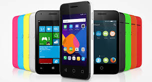

Gama baja
En está categoría entran desde marcas chinas, imitaciones de gama media o alta hasta terminales obsoletos con muy pocas excepciones (Ej: el nokia n8 es una reliquia de colección pero su cámara es muy adelantada para cuando fue lanzado al mercado)
Suelen ser pequeñosHTC-desire-960x623
Tienen funciones básicas o las funciones que traen ya no están a la altura de un SmartPhone (ej:nokia)
Precios muy economicos
Características muy limitadas (cámara VGA, memoria interna, sin flash, se ponen muy lentos con el tiempo)
No reciben soporte ni actualizaciones.
Gama media
Aquí se ubican los SmartPhones algunos dispositivos de marcas asiáticas, dispositivos devaluados por el tiempo que tienen en el mercado (puede ser engañoso) y las propuestas conservadoras en especificaciones de marcas reconocidas que pueden hacer mucho pero no tanto.
Suelen ser muy equilibrados en sus características
Generalmente no superan los 500 dólares en precio (como mucho).
Tienen algunas funciones de la gama alta del momento.
Los materiales ya son de calidad aceptable.
Pantallas que no superan las 4.5 pulgadas (en promedio).
Cámaras de 3 a 5 Mpx
Tienen soporte limitado pero existe comunidad de desabolladores para actualizar con una ROM
Telefonos que entran dentro de está categoría:apertura-moviles-gama-media
Gama alta
Aquí se ubican los mejores, puedes hasta lavarte los dientes con ellos (es broma), se distinguen por sus exquisitas especificaciones pero no necesariamente representan una mejor experiencia al usarlos si no se elige con cuidado.
Los mejores avances tecnológicos pueden aparecer en está gama para luego ser heredados con el tiempo a la gama media en menor medida.
También pueden incluirse otros terminales no tan nuevos pero que siguen siendo una excelente opción en gama alta aunque no cumplan con el requisito del precio.
Pantallas de 4 pulgadas en adelante
Memoria interna desde 16GB
Soporte de actualizaciones (las recibe antes pero depende de la marca)
Diseñados para redes 4G
Muchos núcleos, procesadores y RAM para que sean muy rápidos
Cámaras de calidad desde 8 Mpx
Destacan por ser relativamente delgados
Eficiencia energética
Se conectan con la TV
Desde 800 dólares en adelante
Se conectan con Wearables (Galaxy Gear,iWatch, etc)
Mide tu ritmo cardíaco, predice el futuro, te ayuda a bajar de peso, puedes mirar las estrellas, lee tu mente (es broma) y todo lo que se te ocurra.